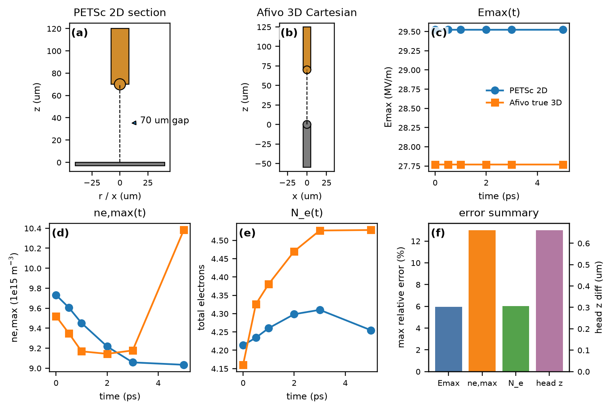
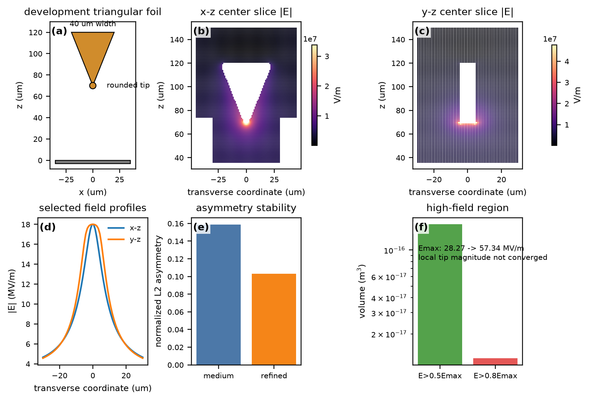
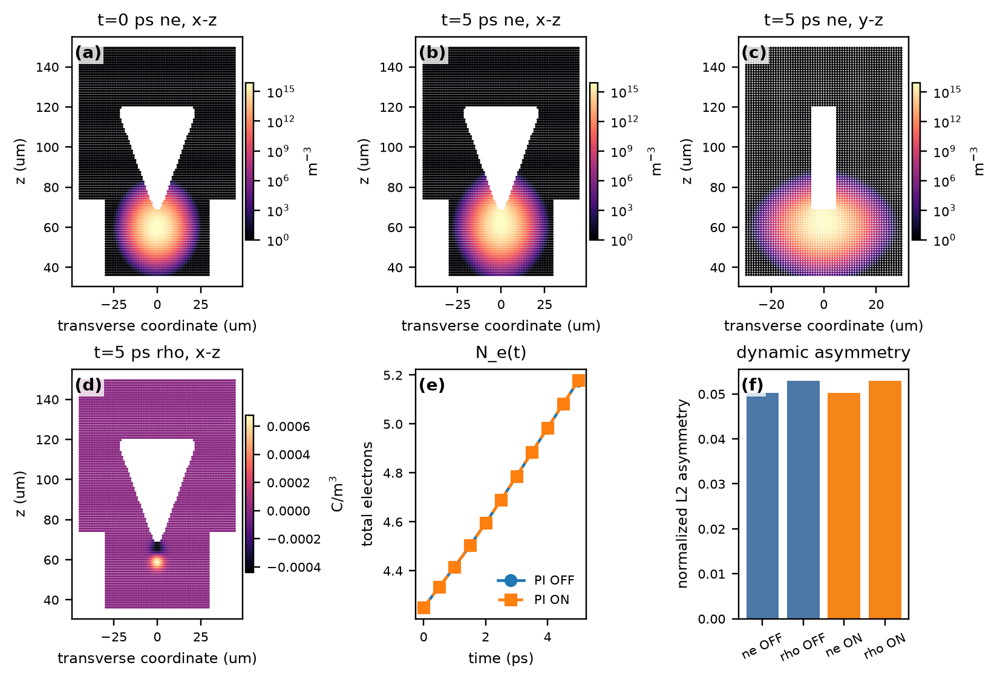
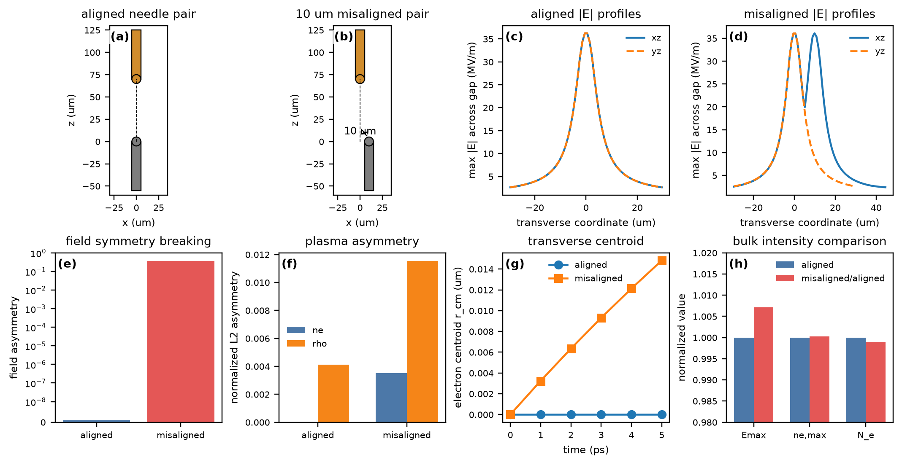
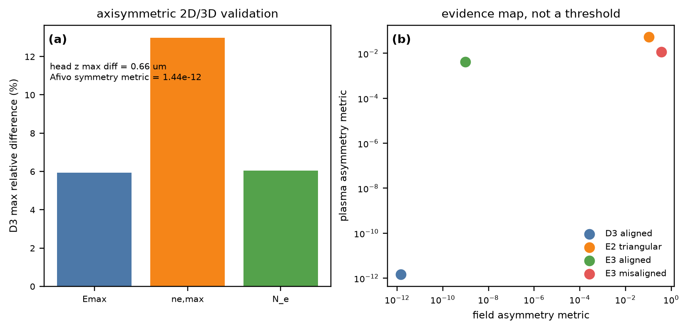

本报告汇总 Stage D3、Stage E1、Stage E2 和 Stage E3 已完成的真实 smoke-test 数据，用于评估未来投稿论文中 3D 仿真部分的候选图。Stage D 的作用是验证 Afivo true 3D Cartesian solver 在轴对称条件下能够退化到 PETSc 2D 轴对称结果；Stage E 的作用是验证真实 non-axisymmetric geometry 会导致 3D field/plasma response。
本报告属于 development/smoke-level validation，不是 final calibrated experimental simulation。所有三角箔和双针尺寸均为 development geometry；正式实验定量图应在 Stage B 几何和 measured voltage waveform 完成后重跑。

Validation of the 3D Afivo model against the axisymmetric PETSc model
图 E1. Afivo true 3D Cartesian 模型相对于 PETSc 2D 轴对称模型的退化验证。(a) PETSc 轴对称截面示意；(b) Afivo 真实 3D Cartesian 对齐电极示意；(c-e) Emax、ne,max 与总电子数随时间的对比；(f) 稳健误差指标汇总。最大差异为 Emax 5.94%、ne,max 12.99%、Ne 6.04%，head position 最大差异 0.66 um。
在相同的轴对称物理设定下，Afivo true 3D Cartesian 计算给出的 Emax、峰值电子密度和总电子数均跟随 PETSc 2D 轴对称基准演化。最大相对差异分别为 5.94%、12.99% 和 6.04%，前沿位置最大差异为 0.66 um。
Afivo 解的横向质心偏移低于 7.94e-13 m，中心切面对称性指标为 1.44e-12。由于 leading edge 基本 pinned，head velocity 的相对误差不作为主要判据。
该结果说明，当几何、电压、输运、化学和种子均保持轴对称时，3D Cartesian AMR 求解不会自发引入显著非轴对称响应；剩余差异主要来自电极离散和数值格式差异。
方法验证图。它是进入 3D 非轴对称结果之前的必要数值可信度证据，适合正文 Methods/validation 或补充材料主图。

Three-dimensional electrostatic field of the triangular-foil electrode
图 E2. 三角铜箔 development geometry 的三维静电场。(a) 有限圆角三角箔示意；(b,c) refined x-z 与 y-z 中心截面 |E|；(d) 两个截面的 selected field profile；(e) medium 与 refined 非对称性指标；(f) 高场体积。refined asymmetry metric 为 0.1031，medium 为 0.1586；Emax 从 2.827e7 增至 5.734e7 V/m，局部峰值场尚未网格收敛。
三角铜箔 development geometry 在 x-z 与 y-z 中心截面给出明显不同的电场分布。局部加密后，电场非对称性指标由 medium 的 0.1586 变为 refined 的 0.1031，非轴对称结论保持稳定。
同时，局部峰值场从 2.827e7 V/m 增至 5.734e7 V/m，变化约 102.8%。因此图中可展示尖端/边缘的高场集中位置，但不能把 57.3 MV/m 解释为已经收敛的实验物理峰值场。
有限宽度、有限厚度和有限边缘圆角破坏了任何绕 z 轴的旋转对称性，使高场区域同时受尖端曲率和侧边缘影响；这是 2D 轴对称投影无法保持的几何信息。
重要支撑图。它支撑 Stage E 进入 3D 的几何必要性；正式投稿前应使用 Stage B 校准几何重跑。

Transfer of geometric asymmetry to early discharge dynamics
图 E3. 三角箔几何非对称性向早期放电动力学的传递。(a) 初始电子密度切片；(b,c) 5 ps 时 x-z 与 y-z 电子密度切片；(d) 5 ps 电荷密度切片；(e) PI OFF/ON 总电子数演化；(f) ne/rho 非对称性。PI OFF 总电子数 4.249896→5.1771357，PI ON 为 4.249896→5.1776558；Avalanche=YES，Streamer propagation=NO，Bridge=NO。
在三角箔 development geometry 中，PI OFF case 的总电子数由 4.2499 增至 5.177136，PI ON case 由 4.2499 增至 5.177656。两者均表现出早期 avalanche 增长，但未出现 streamer propagation 或 bridge。
5 ps 时，electron-density plane asymmetry 约为 0.0503，charge-density plane asymmetry 约为 0.0529。PI ON/OFF 在这个 5 ps development case 中差异很小，因此该图不把 photoionization 作为主结论。
初始种子仍位于尖端附近，但三角箔电场在两个中心截面上不同，电子漂移和反应源在早期即采样到这种几何非对称性，使 avalanche 的 ne/rho 分布继承电极的 3D 特征。
Supplementary候选。它证明动态和 source export 管线工作，但当前只是早期 avalanche，尚不足以作为主物理图。

Controlled symmetry breaking by lateral needle misalignment
图 E4. 双针 lateral misalignment 导致的受控对称性破缺。(a,b) aligned 与 10 um misaligned 双针几何；(c,d) 两组中心切面场 profile；(e) field asymmetry；(f) ne/rho asymmetry；(g) 电子横向质心；(h) Emax、ne,max、Ne 归一化对比。field asymmetry 从 9.59e-10 增至 0.3719，ne asymmetry 从 2.80e-5 增至 3.52e-3，rho asymmetry 从 4.10e-3 增至 1.154e-2；整体强度指标保持接近。
双针 controlled benchmark 中，aligned case 的 field asymmetry 为 9.59e-10，misaligned case 增至 0.3719。对应的电子密度非对称性从 2.80e-05 增至 3.5190e-03，电荷密度非对称性从 4.1044e-03 增至 1.1543e-02。
与此同时，两组整体放电强度量基本不变：aligned/misaligned 的 Emax 分别为 3.8197e+07 和 3.8470e+07 V/m，ne,max 分别为 8.0038e+15 和 8.0061e+15 m^-3，总电子数分别为 4.5526 和 4.5479。电子横向质心最大偏移从 6.12e-18 m 增至 1.48e-08 m。
在相同电压、输运、化学、seed 和分辨率下，10 um lateral offset 改变的是边界几何本身，而不是总体电离强度。整体 Emax、ne,max 和 Ne 接近，说明观测到的空间非对称性主要由 geometry symmetry breaking 触发。
核心主图。这是 Stage E 最强的 controlled 证据，可作为论文中说明 3D 几何必要性的机制支撑主图。

Evidence map for the applicability of axisymmetric and three-dimensional models
图 E5. 轴对称模型与三维模型适用性的证据图。(a) D3 轴对称 PETSc/Afivo 动态验证误差；(b) D3/E2/E3 的场非对称性与等离子体非对称性证据图。该图不定义通用阈值，而用于说明轴对称几何可由 2D 表示，内禀或受控破缺几何需要 3D 分辨。
证据图分为两部分：一部分展示 D3 轴对称退化验证误差，另一部分比较 Stage E 的非轴对称场/等离子体响应指标。该图不定义 universal 2D/3D threshold，而是把不同 benchmark 的证据边界清楚分开。
D3 表明轴对称 geometry 可由 PETSc 2D 高效表示；E2/E3 表明三角箔和错位双针会产生 2D 轴对称模型无法表达的空间非对称性。
轴对称模型的有效性取决于几何、边界和初始条件是否保持旋转对称。一旦电极具有有限厚度/边缘或 deliberate lateral offset，空间电场和源项不再能由单一 r-z 截面代表。
重要支撑图。它适合作为 Discussion/summary 图，帮助读者理解 2D 与 3D backend 的职责边界。
| Figure | Scientific question | Evidence strength | Current limitation | Recommended paper role | Need rerun later? |
|---|---|---|---|---|---|
| Fig E1 | 3D solver 是否可信 | Strong | early-time only | Method validation | No, production refinement only |
| Fig E2 | triangular foil 是否真正 3D | Strong qualitative | tip Emax not converged | Important support | Yes, Stage B calibrated geometry |
| Fig E3 | 几何非对称是否进入 early dynamics | Moderate | avalanche only, no streamer | Supplementary candidate | Yes, if used as main physics |
| Fig E4 | misalignment 是否产生 controlled symmetry breaking | Strong | early-time only, no bridge | Mechanism-supporting main figure | Yes, for final experimental geometry |
| Fig E5 | 2D/3D 适用性边界如何表达 | Strong as synthesis | not a universal threshold | Important support | No for method summary; update values after production |
A. Stage D/E 是否值得进入论文正文？ PARTIAL。D/E 值得进入论文，但不应被包装成主科学创新本身。它们更适合作为 numerical validation 与 mechanism-supporting evidence：Fig E1 证明 3D backend 可信，Fig E4 证明受控几何破缺确实产生 3D 响应。
B. 推荐角色。 Fig E4 可承担 mechanism-supporting evidence 并作为正文核心支撑图；Fig E1 主要属于 numerical validation；Fig E2 是 3D 几何必要性的支撑图；Fig E3 更适合作为 Supplementary 候选；Fig E5 可作为 discussion summary。
C. 当前最强结果。 Fig E4：仅改变 10 um lateral offset，field asymmetry 从近零增至 0.3719，而 Emax、ne,max 和 Ne 基本保持一致，这是 controlled symmetry-breaking 的最干净证据。
D. 当前最弱结果。 Fig E3：只显示 early avalanche 继承三角箔非对称性，没有 streamer propagation 或 bridge，PI ON/OFF 差异也很小。
E. Stage B 和实验数据完成后需要正式重跑。 Fig E2 和 Fig E4 的几何/电压应以 Stage B calibrated geometry 和 measured voltage waveform 重跑；若 Fig E3 要作为正文动态物理图，也必须重跑。
F. 可保留为方法验证的现有 smoke 结果。 Fig E1 作为 2D/3D backend validation 可保留；Fig E5 的方法边界逻辑可保留但数值可随生产 case 更新。